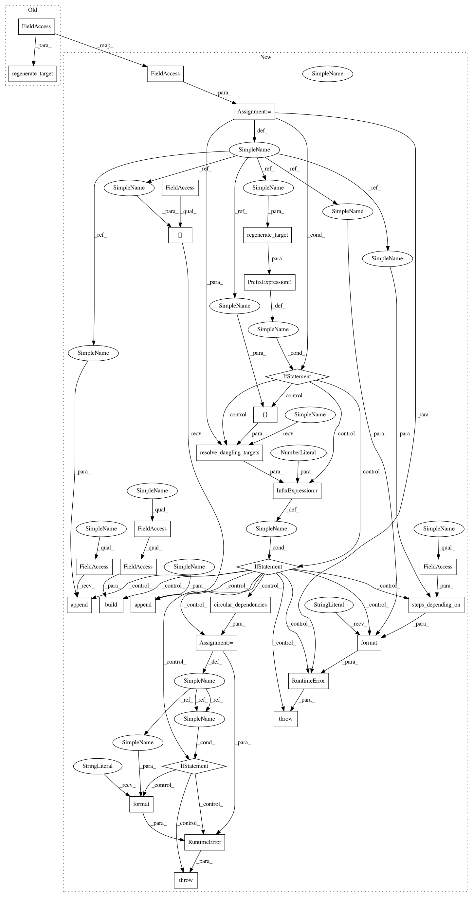

2d5d9f18dc478db25da39864e550caaccaf86e09,sos/sos_executor.py,Base_Executor,run,#Base_Executor#Any#Any#,401
Before Change
self.save_dag(dag)
elif isinstance(res, RemovedTarget):
runnable._status = None
dag.regenerate_target(res.target)
self.save_dag(dag)
elif isinstance(res, UnavailableLock):
runnable._status = "pending"
runnable._signature = (res.output, res.sig_file)
After Change
self.save_dag(dag)
elif isinstance(res, RemovedTarget):
runnable._status = None
target = res.target
if not dag.regenerate_target(target):
if self.resolve_dangling_targets(dag, [target]) == 0:
raise RuntimeError("Failed to regenerate or resolve {}{}."
.format(target, dag.steps_depending_on(target, self.workflow)))
runnable._depends_targets.append(target)
dag._all_dependent_files[target].append(runnable)
dag.build(self.workflow.auxiliary_sections)
//
cycle = dag.circular_dependencies()
if cycle:
raise RuntimeError("Circular dependency detected {}. It is likely a later step produces input of a previous step.".format(cycle))
self.save_dag(dag)
elif isinstance(res, UnavailableLock):
runnable._status = "pending"
runnable._signature = (res.output, res.sig_file)
In pattern: SUPERPATTERN
Frequency: 3
Non-data size: 30
Instances
Project Name: vatlab/SoS
Commit Name: 2d5d9f18dc478db25da39864e550caaccaf86e09
Time: 2016-12-10
Author: ben.bog@gmail.com
File Name: sos/sos_executor.py
Class Name: Base_Executor
Method Name: run
Project Name: vatlab/SoS
Commit Name: 2d5d9f18dc478db25da39864e550caaccaf86e09
Time: 2016-12-10
Author: ben.bog@gmail.com
File Name: sos/sos_executor.py
Class Name: Base_Executor
Method Name: run
Project Name: vatlab/SoS
Commit Name: 2d5d9f18dc478db25da39864e550caaccaf86e09
Time: 2016-12-10
Author: ben.bog@gmail.com
File Name: sos/sos_executor.py
Class Name: MP_Executor
Method Name: run
Project Name: vatlab/SoS
Commit Name: 2d5d9f18dc478db25da39864e550caaccaf86e09
Time: 2016-12-10
Author: ben.bog@gmail.com
File Name: sos/jupyter/sos_executor.py
Class Name: Interactive_Executor
Method Name: run